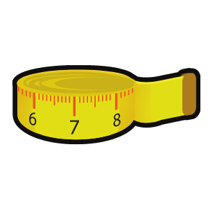

El problema es lo que hemos visto que a un grupo de personas les sucede en condiciones particulares y únicas dentro de su entorno o contexto. Debe ser algo bien puntual, concreto, específico y que se pueda medir.